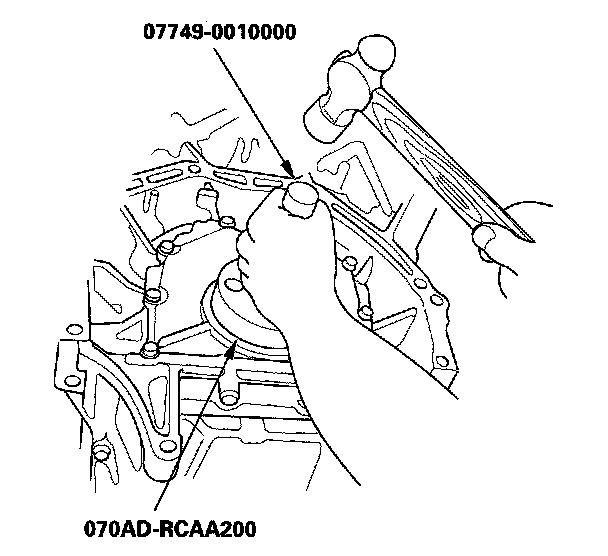

Rear Crankshaft Main Bearing Seal: Service and Repair
Transmission End Crankshaft Oil Seal Installation - In CarSpecial Tools Required
^ Driver 07749-0010000
^ Driver attachment, 106 mm 070AD-RCAA200
1. Remove the transmission and the drive plate.
2. Remove the transmission end crankshaft oil seal.
3. Clean and dry the crankshaft oil seal housing.
4. Apply a light coat of multipurpose grease to the crankshaft and to the lip of the seal.
5. Using the special tools, drive in the crankshaft oil seal until the driver attachment bottoms against the engine block end cover. Align the hole in the driver attachment with the pin on the crankshaft.

6. Clean any excess grease off the crankshaft, and check that the oil seal lip is not distorted.
7. Install the drive plate, and the transmission.